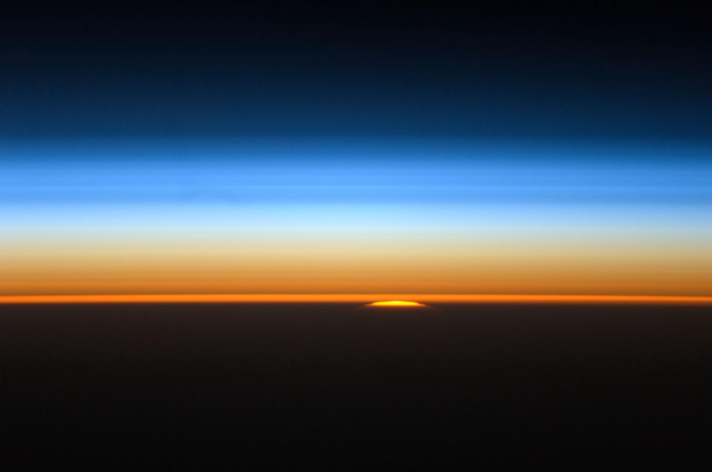
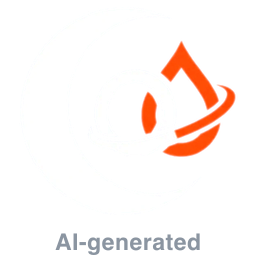
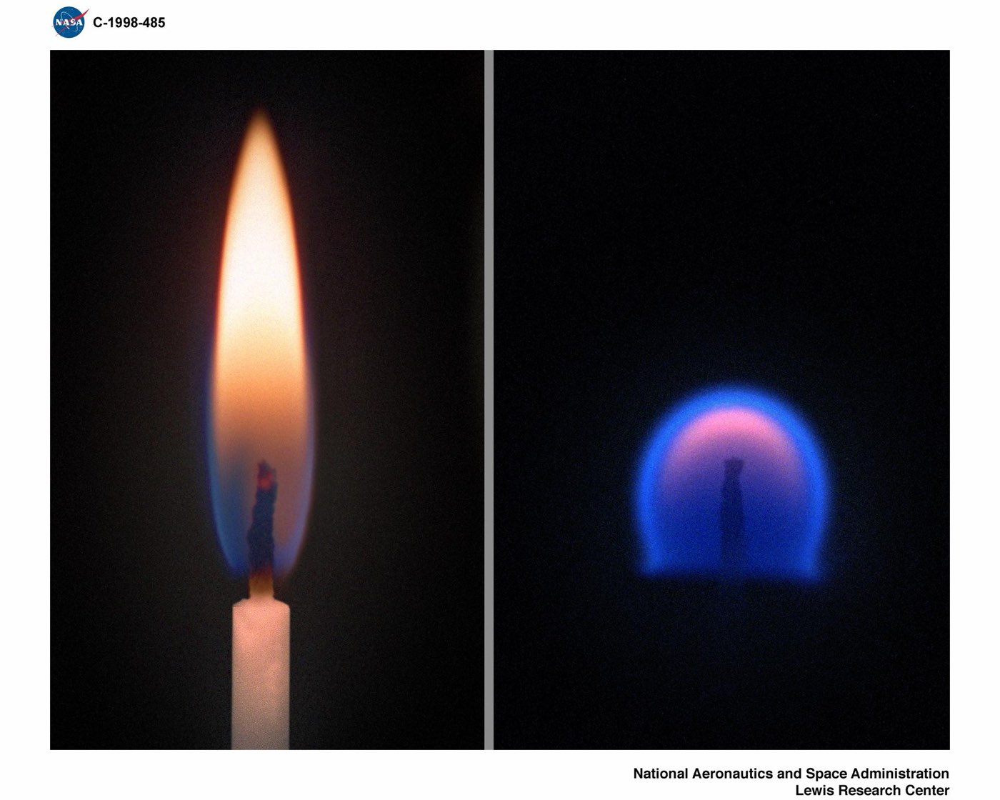
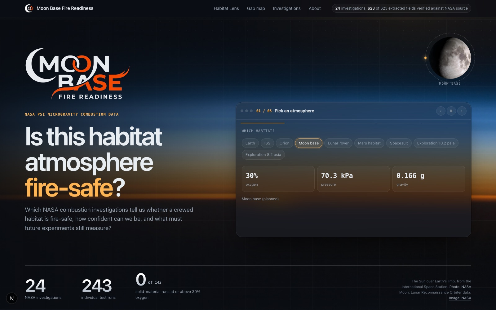
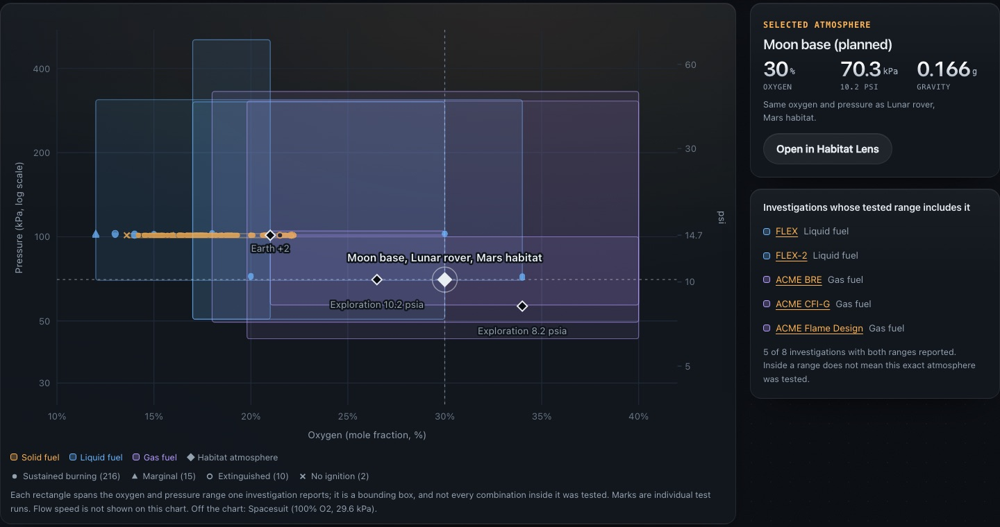
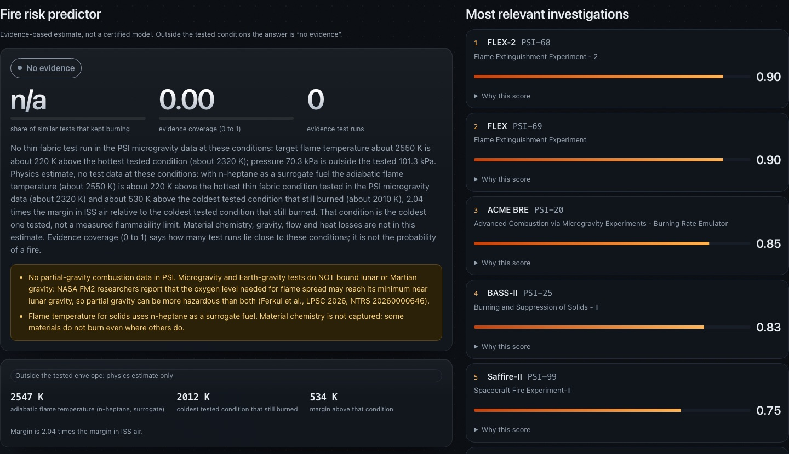

NASA PSI microgravity combustion dataWhich NASA combustion investigations tell us whether a crewed habitat is fire-safe, how confident can we be, and what must future experiments still measure?

Moon Base Fire ReadinessThe problem · 2 / 7Earth sea level against the planned Moon base atmosphere. More oxygen makes materials easier to burn; without buoyancy a flame behaves differently.

Earth gravityMicrogravityA candle flame in normal gravity and in microgravity. Photo: NASA, GRC-1998-C-00485
investigations
individual test runs
fields verified against source

solid-material test runs in the PSI microgravity data are at or above 30% oxygen. The highest oxygen level tested on a solid is 22.2%.
0 of 243 test runs are at partial gravity.

Coverage and gap map: each rectangle is the range one investigation reports, each mark one test run, the diamond is the Moon base.

Each value carries its source, locator and a verbatim quote. A value the sources do not report is shown as “not reported”, never filled in.
The report is written from the curated data only. Citations that are not in the data are stripped and counted. No model name is shown.
Leave-one-out reproduces all 101 droplet runs, which only confirms the labelling rule. For solids it is no better than “always sustained”: 131 of 134 runs burned. We say so in the app.
NASA’s FM2 team reports that the oxygen needed for flame spread may be lowest near lunar gravity (Ferkul et al., LPSC 2026). The tool never interpolates across gravity.
Fabrics and plastics at 30% oxygen or more and about 70.3 kPa. Today no solid run in the PSI microgravity data is above 22.2% oxygen.
Flame spread and extinction at lunar and Martian gravity. Microgravity and Earth-gravity results are not a safe bound.
Almost every ordinary solid run sustained burning, so the data say little about limits. Extinction limits at low flow are the missing measurement.